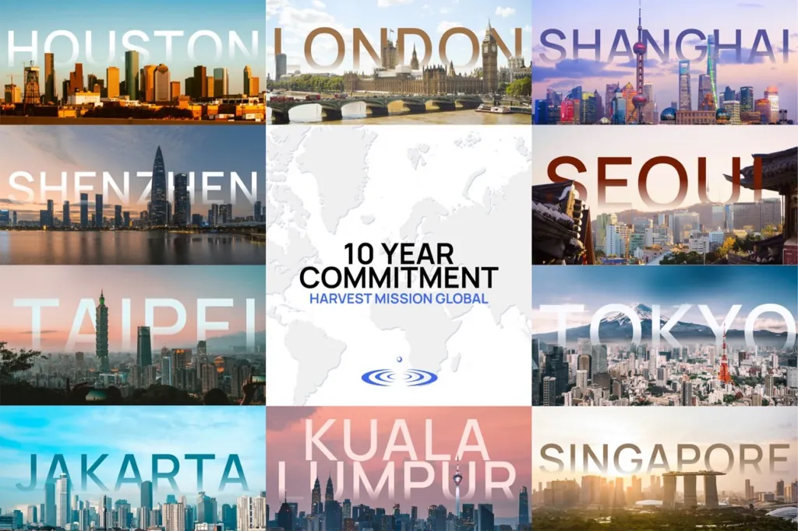

Mission & Vision
We believe that transformed lives will transform the world. God has called our family of churches to:
Mission
To transform lost people into Christ’s disciples who will then transform the world.
Vision
Multiplying churches in campuses and cities to transform the next generation among the nations.
Our Heritage
-
1996
Harvest Mission is founded.
-
2008
A church is planted in Austin, Texas, impacting the University of Texas campus and the city.
-
2015
A team of twenty plants an international church in Hong Kong.
-
Today
One family, two churches — and a commitment to plant more in the next ten years.
The 10 Year Commitment
As a family, we have committed to our 10-10 vision — to plant 10 churches in 10 cities in the next 10 years.

SALT COMMAND
Seven values that shape every church in the family.
Spirit-led ministry
To be connected with God and anointed by His Spirit, in order to hear His direction and step out in faith to minister to His people with His power.
Leadership development
To develop people to their full potential and in Christ-like character in order to impact their spheres of influence and increase the spread of the Gospel to future generations.
Transculturalism
To make the decision to go through discomforts and difficulties, in order to develop understanding and delight in people from a different culture.
Community
To willingly come together as a diverse group of people to experience and live out the Gospel, in order to fulfill God’s purposes.
Ministry inside and outside
To be a visible display and viable demonstration of God’s Kingdom by stewarding our God-given spiritual gift(s), resources and experiences to build God’s Church and transform the world.
Missions through church planting
To obey and fulfill the Great Commission through the local church, which God has established so that we can be witnesses and servants of His redemptive purpose.
Discipleship
To invite people to join us in the lifestyle of the Kingdom by imitating Christ, teaching people to obey Him, and imparting Biblical values.